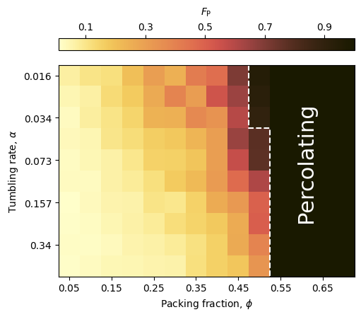
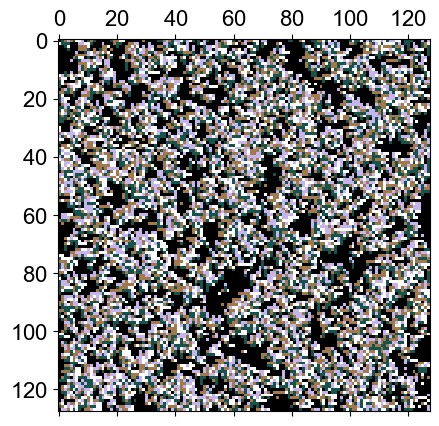
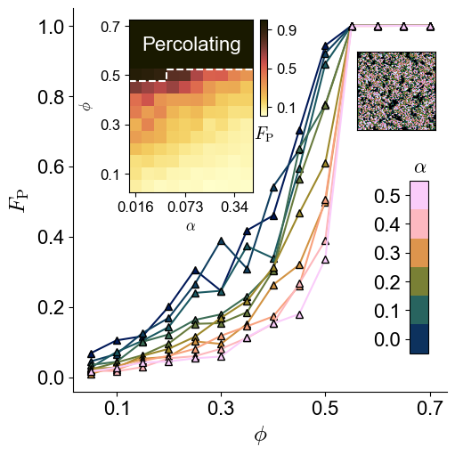

Defaulting to user installation because normal site-packages is not writeable
Collecting natsort
Downloading natsort-8.4.0-py3-none-any.whl.metadata (21 kB)
Downloading natsort-8.4.0-py3-none-any.whl (38 kB)
Installing collected packages: natsort
WARNING: The script natsort is installed in '/home/jupyter/.local/bin' which is not on PATH.
Consider adding this directory to PATH or, if you prefer to suppress this warning, use --no-warn-script-location.
Successfully installed natsort-8.4.0
Note: you may need to restart the kernel to use updated packages.Percolation check
Code
import warnings
warnings.filterwarnings("ignore")
import os
os.chdir("/project/persistent-exclusion-process")
#from statsmodels.graphics.mosaicplot import mosaic
import matplotlib.pyplot as plt
import cmcrameri
import h5py
import numpy as np
from scipy import ndimage
import seaborn as sns
import pandas as pd
from cmcrameri import cm
#import natsort
from src.utils import get_cluster_labels, get_ds_iters
from src.plot_utils import get_plot_configs
plot_configs = get_plot_configs()
plt.rcParams.update(plot_configs)
np.set_printoptions(precision=5)Code
def get_biggest_cluster_loc(file, idx):
kernel = [[0, 1, 0], [1, 1, 1], [0, 1, 0]]
labelled, _ = get_cluster_labels(file, idx)
lb = labelled.flatten()
cluster_sizes = np.bincount(lb)[1:]
biggest_cluster_id = np.argmax(cluster_sizes) + 1
return np.where(labelled == biggest_cluster_id)
def check_threshold(locs, threshold=20, dim=128):
#print(np.ptp(locs[0]), np.ptp(locs[1]))
if np.ptp(locs[0]) >= 128-threshold:
return True
if np.ptp(locs[1]) >= 128-threshold:
return True
return FalseCode
tumbles = np.logspace(-6,-1,10, base=2)
density = [0.05,0.1,0.15,0.2,0.25,0.3,0.35,0.4,0.45,0.5,0.6,0.7]
acceptance = .5
res = []
for t in tumbles:
for d in density:
file = f"no_roll_data/dataset_tumble_{t:.3f}_{d}.h5"
hf = h5py.File(file)
data = [ hf[i][:] for i in natsort.natsorted(list(hf.keys()))]
data = np.array(data)
P = []
for idx in range(1000):
locs = get_biggest_cluster_loc(file, idx)
P.append(check_threshold(locs))
res.append(np.mean(P))
print(np.mean(P))1.0
1.0
1.0
1.0
1.0
1.0
1.0
1.0
1.0
1.0Code
tumbles = np.logspace(-6,-1,10, base=2)
density = [0.05,0.1,0.15,0.2,0.25,0.3,0.35,0.4,0.45,0.5,0.55,0.6,0.65,0.7]
cmap = plt.get_cmap('cmc.lajolla')
xlabels = np.concatenate(([0,0],tumbles))
ylabels = np.concatenate(([0,0],density))
fig, ax = plt.subplots(1,1, figsize=(5,5), constrained_layout=True)
m = ax.imshow(perc, cmap=cmap.reversed())
cbar = plt.colorbar(ax=ax, mappable=m, location='top', aspect=25,
fraction=0.046, pad=0.05)
ax.set_yticks([0,2,4,6,8], labels=np.round(tumbles[::2],3))
ax.set_xticks([0,2,4,6,8,10,12], labels=density[::2])
#ax.plot([7.5,7.5,8.5,8.5,8.5,9.5],[-0.5,0.5,0.5,1.5,4.5,4.5], c='white', linestyle='--')
ax.plot([8.5,8.5,8.5,8.5,9.5,9.5],[-0.5,0.5,1.5,2.5,2.5,9.5], c='white', linestyle='--')
cbar.ax.set_xlabel('$F_\mathrm{P}$', labelpad=7)
cbar.ax.set_xticks([0.1,0.3,0.5,0.7,0.9])
ax.set_ylabel(r"Tumbling rate, $\alpha$")
ax.set_xlabel(r"Packing fraction, $\phi$")
ax.text(s=r"Percolating", x=10.75, y=6.75, c='w', rotation=90, fontsize=22)
fig.savefig('plots/percolating_prob.pdf')
Code

Code
import matplotlib as mpl
from mpl_toolkits.axes_grid1.inset_locator import InsetPosition, inset_axes
cmap=plt.get_cmap('cmc.batlow', lut=10)
fig, axm = plt.subplots(1,1, figsize=(5,5), constrained_layout=True)
for i in range(10):
axm.plot(density,perc[i], mec='k', mfc=cmap(i), c=cmap(i), marker='^')
sns.despine()
axm.set_ylabel(r"$F_\mathrm{P}$")
axm.set_xlabel(r"$\phi$")
axm.set_xticks([0.1,0.3,0.5,0.7])
ax3 = inset_axes(axm, width="100%", height="100%", borderpad=1)
ax3.set_axes_locator(InsetPosition(axm, [0.9, 0.1, 0.05, 0.45]))
cmap = 'cmc.batlow'
norm = mpl.colors.Normalize(vmin=0.016, vmax=0.5)
cb1 = mpl.colorbar.ColorbarBase(ax3,
cmap=cmap,
norm=norm,
ticklocation='left',
orientation='vertical',
boundaries=[0.0,0.1,0.2,0.3,0.4,0.5,0.6])
cb1.ax.set_yticks([0.05,0.15,0.25,0.35,0.45,0.55])
cb1.ax.set_yticklabels([0.0,0.1,0.2,0.3,0.4,0.5])
ax3.text(s=r"$\alpha$", x=0.2, y=1.05, transform=ax3.transAxes)
ax = inset_axes(axm, width="100%", height="100%", borderpad=1)
ax.set_axes_locator(InsetPosition(axm, [0.14, 0.52, 0.35, 0.45]))
cax = inset_axes(axm, width="100%", height="100%", borderpad=1)
cax.set_axes_locator(InsetPosition(axm, [0.5, .72, 0.02, 0.25]))
tumbles = np.logspace(-6,-1,10, base=2)
density = [0.05,0.1,0.15,0.2,0.25,0.3,0.35,0.4,0.45,0.5,0.55,0.6,0.65,0.7]
cmap = plt.get_cmap('cmc.lajolla')
xlabels = np.concatenate(([0,0],tumbles))
ylabels = np.concatenate(([0,0],density))
m = ax.imshow(perc.T[::-1], cmap=cmap.reversed())
cbar = plt.colorbar(ax=ax, mappable=m, cax=cax, location='right', aspect=5,
fraction=0.046, pad=0.05)
ax.set_xticks([0,4,8])
ax.set_xticklabels(np.round(tumbles[::4],3),fontsize=12)
ax.set_yticks([0,4,8,12])
ax.set_yticklabels(density[::-4], fontsize=12)
#ax.plot([7.5,7.5,8.5,8.5,8.5,9.5],[-0.5,0.5,0.5,1.5,4.5,4.5], c='white', linestyle='--')
ax.plot([-0.5,0.5,1.5,2.5,2.5,9.5], [4.5,4.5,4.5,4.5,3.5,3.5], c='white', linestyle='--')
cbar.ax.set_xlabel('$F_\mathrm{P}$', labelpad=7, fontsize=14, loc='center')
cbar.ax.set_yticks([0.1,0.5,0.9])
cbar.ax.set_yticklabels([0.1,0.5,0.9], fontsize=12)
ax.set_xlabel(r"$\alpha$", fontsize=12)
ax.set_ylabel(r"$\phi$", fontsize=12)
ax.text(s=r"Percolating", x=.5, y=2, c='w', fontsize=16)
#cax.text(s=r"$F_\mathrm{P}$", x=0, y=1.1, c='k', fontsize=12)
aax = inset_axes(axm, width="100%", height="100%", borderpad=1)
aax.set_axes_locator(InsetPosition(axm, [0.76, .68, 0.21, 0.21]))
aax.set(xticks=[],yticks=[])
aax.imshow(img, origin='upper', cmap='cubehelix')
fig.savefig('plots/percolating_prob.pdf')
Code
tumbles = np.logspace(-6,-1,10, base=2)
density = [0.05,0.1,0.15,0.2,0.25,0.3,0.35,0.4,0.45,0.5]
acceptance = .5
res2 = []
for t in tumbles:
file = f"no_roll_data/dataset_tumble_{t:.3f}_0.5.h5"
hf = h5py.File(file)
data = [ hf[i][:] for i in natsort.natsorted(list(hf.keys()))]
data = np.array(data)
P = []
for idx in range(1000):
locs = get_biggest_cluster_loc(file, idx)
P.append(check_threshold(locs))
res2.append(P)